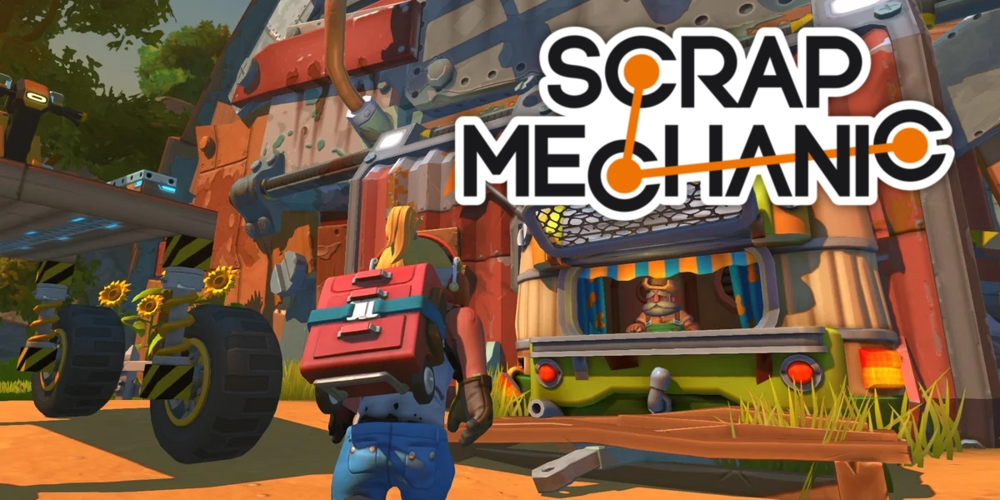

Trzy Fajne Gry
===================================
BeamNG.Drive
BeamNG.drive to gra symulacyjna pojazdów opracowana i
opublikowana przez BeamNG GmbH, twórcę gier wideo z Bremy.
Gra wykorzystuje fizykę ciała miękkiego, aby symulować
realistyczne prowadzenie i uszkodzenia pojazdów.
Gra została pierwotnie wydana jako demo technologiczne
3 sierpnia 2013 r.
===================================
My Summer Car

My Summer Car to gra komputerowa stworzona przez fińskie studio
Amistech Games i wydana 24 października 2016
na platformę Microsoft Windows.
Gra w dalszym ciągu znajduje się w fazie wczesnego dostępu,
a twórca często dodaje nowe aktualizacje naprawiające
błędy i wprowadzające nowe elementy urozmaicające rozgrywkę.
===================================
Scrap Mechanic

Scrap Mechanic to sandboxowa gra wideo opracowana dla systemu Windows
przez szwedzkie studio gier i wydawcę Axolot Games,
w której gracze mogą budować maszyny, pojazdy i budynki
oraz udostępniać swoje dzieła online.
Początkowa wersja gry, wydana 20 stycznia 2016 roku,
była trybem kreatywnym z nieograniczonym dostępem
do wszystkich dostępnych części do budowania.
W dniu premiery była to najlepiej sprzedająca się gra na Steamie,
a jej sprzedaż szacuje się na 1-2 miliony.
Aktualizacja trybu przetrwania do gry,
zawierająca nowe mechaniki gry, w tym dziką przyrodę,
oczyszczanie, rolnictwo i gotowanie, a także podwodny biom,
została wydana 7 maja 2020 r.
Była to trzecia najlepiej sprzedająca się gra na Steamie
w tym tygodniu po aktualizacji.
===================================